2006年01月23日
今週もゴールデンゲートパークでアーチェリー
先週に引き続きGGPで練習。
夕方にいったためか、広大なフィールドをほぼ貸し切り状態！
今週は距離表示のあるレーンでうてたので、50mと30mを織り交ぜて148本。
だいぶまともに当たるようになってきました。
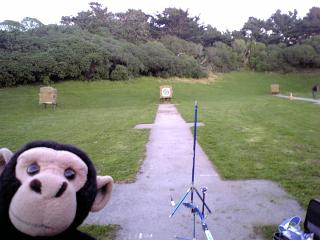
ちんぱんとアーチェリー場
{kind=link}
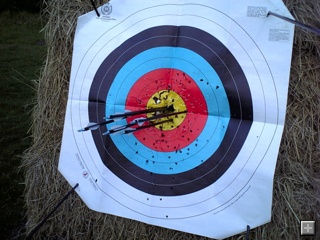
30mならまぁ金には入る
{kind=link}
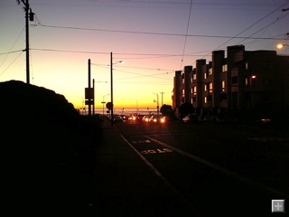
帰りは太平洋が夕日に染まってました
{kind=link}
投稿者 yusuke : 15:49 | コメント (0) | トラックバック
2006年01月16日
Golden Gate ParkへGo!
今日はレンタカーでGolden Gate Parkのアーチェリー場へ行ってきた。
Google Mapではここ。
ひしゃげた台形の下の方に箸が二本転がっているようなとこがアーチェリー場。
今日は良い天気でアーチェリー場は大盛況。久しぶりの練習でちょっと体が鈍いけれども一応146本射ってきた。
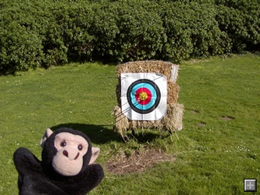
{kind=link}
ここのアーチェリー場では珍しくオリンピックスタイルでうっている人がいた。
ターゲットマットが欲しいんだけど良いアーチェリー場はないかと聞けば、パシフィックアーチェリーが良いだろう、とのこと。
280号沿いのどこかにあるらしい。細かいdirectionを聞いたけどまともに聞き取れず。あとでGoogle Mapsで調べよう。
そこでは$10くらいでインドアで練習ができるらしい。雨の日には良いかも。
投稿者 yusuke : 10:01 | コメント (0) | トラックバック
2005年05月05日
練習
今日は光が丘で練習。板橋に引っ越してから初めて行ったけど車で15分でついた。
近いし緑はきれいだし広いし素敵。
日曜休日は路駐可なのでうまく利用したい。
155本 70m279/30m331
クリッカーがないと全然あたらない。クリッカーなしでいくらかうって練習した。
どうも伸びあいがしっかりできない。
投稿者 yusuke : 22:30 | コメント (0) | トラックバック
2005年05月04日
練習
166本 90m235/70m278/30m332
Single 点取りしようと思ったけど混雑でうちたい距離をうてず。
投稿者 yusuke : 22:30 | コメント (0) | トラックバック
2005年05月03日
練習
174本 90m267/70m260/50m299/30m302 Single 1128
70m/30mがいいかげんな射でうまくあたらず。
ストリングサイト、クリッカーチェックなど、チェックポイントをしっかりみのがさず外しをなくしたい。
5/15のシングル大会に出ることにした。光が丘だから外しも気にせずのびのびとうてるだろう。がんばるぞ！
投稿者 yusuke : 22:30 | コメント (0) | トラックバック
2005年05月02日
練習
5/2 130本 90m258
90mの点取りは1エンド36点から53点までとかなりバラつきがあり。
投稿者 yusuke : 22:30 | コメント (0) | トラックバック
2005年05月01日
応援＆練習
遠路はるばる東海大学まで後輩の応援へ。残念ながら負けてしまい2部2位となった。
入れ替え戦でがんばって1部昇格を果たして欲しい。
http://waseda-archery.homeip.net/archives/000030.html
練習は120本。点取りはなし。90mもまともにあたるのでシングルを点取りしてみようか？
投稿者 yusuke : 22:24 | コメント (0) | トラックバック
2005年04月30日
これがアーチェリーだ！
今日は家族でバーベキューをしたあと、ちょっとみんなにアーチェリーを見せる。
ちょっと敷地の都合で今日は打ち上げ気味の25mと変則的な体制で矢はバラバラ・・。
でも見慣れないみんなの目には新鮮でとても当たっているように映ったらしい。まいいか。
投稿者 yusuke : 23:02 | コメント (0) | トラックバック
2005年04月29日
練習
今日は久しぶりに別荘の裏庭で奥様と一緒に練習。
30mを50本くらい。
投稿者 yusuke : 23:00 | コメント (0) | トラックバック
2005年04月28日
練習
今日は90m/70mを108本。
点数は230 - 262 で LH 492 点。ひどい点数だけども矢がかなり右に寄っていた。
チューニングの余地かなりあり。
70mではなんだか引っ張る方向、押す方向がうまくかみ合って気持ちよくうてた。
投稿者 yusuke : 23:14 | コメント (0) | トラックバック
2005年04月27日
練習
今日は90m/70mで計49本。
90mが232点とやっぱあたらず。
投稿者 yusuke : 23:14 | コメント (0) | トラックバック
2005年04月25日
練習
今日は50m、30mを合わせて104本。
点取りはSHでなんと576点・・・。
ちゃんとうてばあたるので、じっくりタイミングをそろえていかないといけない。
投稿者 yusuke : 23:03 | コメント (0) | トラックバック
2005年04月24日
練習
今日は午前中は後輩の試合の応援へ。チーム新のマークに加え、悲願の王座出場を決め感無量。
午後は板橋で練習。30m を中心に170本。
クリッカーなし、クリッカーを前へずらしての練習でクリッカーにとらわれずしっかり伸び合う練習をする。
一本一本丁寧に射つため、敢えて6本矢取りに抑えて練習した。
弦サイトと押しての伸びが肝心。
投稿者 yusuke : 23:24 | コメント (0) | トラックバック
2005年04月23日
久しぶりに90m！
今日は近射、30m と久しぶりの 90m をうった。140本。
一射一射丁寧にうてば 30m はとりあえず金的にあたるようになったが、90m も思いのほかあたった。
この調子なら来月には1200点はうてるでしょう！
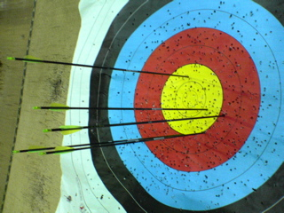
久しぶりの90m。とりあえず8点以内には。
投稿者 yusuke : 23:16 | コメント (0) | トラックバック
2005年04月22日
練習
今日は 30m を中心に 128 本うった。
とにかく押し手をしっかり安定して押すことが肝！
丁寧にうてばグルーピングは悪くない。
投稿者 yusuke : 23:16 | コメント (0) | トラックバック
2005年04月19日
練習
今日はSH(285/317=602)の点取りと30m、近射を練習。計101射した。
フォーム、筋力、チューニングは問題ないのでちゃんとうてば入る。
ちゃんとうてない。早気気味。要イメージトレーニング。
あと条件反射でうたないようにクリッカーを少しずらしてしっかり伸び合う練習を多めにしようと思う。
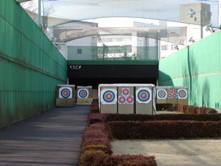
投稿者 yusuke : 21:11 | コメント (0) | トラックバック
2005年04月17日
練習
後輩のリーグ戦を見に行った。男女と勝ち王座出場、一部昇格へ大きく前進したので良かった。
夜は板橋で微妙に練習。30mを8エンドくらい。えらい疲れがたまっていて全然あたらない。
まぁ、弓に触れておくことが重要ということで。
投稿者 yusuke : 23:35 | コメント (0) | トラックバック
2005年04月16日
練習
今日は午前中は大学の射場で、夕方は板橋で練習。
合計40エンドと最近にしてはかなりの量をうった。
午前中はSH点取りで591点。50mが特にグルーピングが悪い。
午後はベアシャフトチューニング。30mでだいたい完成矢とベアシャフトが金的に入るようになった。
ちょっと出し気味だったサイトもセンターに合わせてまっすぐ飛ぶようになり、金的に楽に入るようになった。
来週からは点数が上がりそう。
投稿者 yusuke : 23:24 | コメント (0) | トラックバック
2005年04月15日
練習
今日は50m1R、30m5R。
弓が傾くし押してはしっかり安定しない。弦サイトもズレ気味。課題は満載。
投稿者 yusuke : 23:58 | コメント (0) | トラックバック
2005年04月14日
練習
今日は50m3エンド、近射5エンド、30m5エンド。
SHを点取りしようとおもったがひどく緩みがちなので近射でちょっとイメージを整えることに。うーん、いまいち。
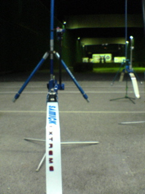
夜の板橋
投稿者 yusuke : 23:51 | コメント (0) | トラックバック
2005年04月11日
練習
今日は雨のせいか夜の板橋はだれもおらず貸し切り状態。
12本間射＆矢取りダッシュでほんの１時間15分くらいで4R射てた。
SH点取り1回+50m2Rで計4R。
点数は 295/311 で SH606点。とにかく早射ちして右肩に乳酸が溜まるのを感じながらうったので30mのグルーピングが大変悪かった。
でもそんな中楽に射てるフォームがちょっと見つかった気がする。肘をちょっと締めて引く感じ。ほんのちょっとだけ。
トレーニングは腕立て伏せ＆腹筋。
投稿者 yusuke : 22:45 | コメント (0) | トラックバック
2005年04月09日
練習
今日は新しい矢でたっぷり練習。
50m,30mを1Rずつ、70mを2R。ようやくシングル射てる筋力、体力がついた。
点数は順に284,311,284,274とショボショボ。
飲み物を買おうとしたらサイフを忘れたことに気がついたので家までランニングで取りに行った。
往復20分ちょっとくらい？なんだかんだ日本帰ってきてからようやく初ランニング。
夜は筋トレで腕立て伏せ、腹筋。
ランニングでなんかスピードがでづらい。ハムが足りない感じ。自宅でハムストリングを鍛える方法はないかな？
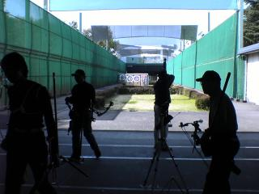
今日の板橋の風景
{kind=link}
投稿者 yusuke : 23:57 | コメント (0) | トラックバック
2005年04月04日
練習
今日は早めに会社に着いたので早めにあがり、練習へ。
射場が近いのはすばらしい。
近射を10本、70mを75本
押し手が全然安定しない。寝るときイメージトレーニングをしよう。全然メンタルトレーニングしてないや。
なんと矢が5本しかないという緊急事態で日本のアーチェリー屋へ急遽矢を注文した。
しっかりしろ、さっさと発送しろ、 FS Discount Archery。
夜は腹筋、腕立て伏せを軽くやった。日本に帰ってからまともにトレーニングしてないや。
投稿者 yusuke : 23:36 | コメント (0) | トラックバック
2005年04月02日
練習
今日は30m2Rくらいだけ。妻は新しい弓を欲しげにしている。
買ってしまえ。へへ。
投稿者 yusuke : 23:30 | コメント (0) | トラックバック
2005年03月30日
練習
今日は50m３エンド、30m2R。
押し手が安定しないのでしっかり的方向に向けて伸ばすイメージが良かった。
30mで二回点取りを行いそれぞれ327点、333点。
もう少し30mを多めにうって当て勘をふくらましたい。
射場では会う人会う人「板橋区に引っ越したんだって！？ 都民大会よろしくね」と言う。
そんなに板橋区にはリカーブボウのアーチャーいないっけ？ がんばろうじゃないか。
投稿者 yusuke : 22:34 | コメント (0) | トラックバック
2005年03月27日
練習
今日も3Rほど。
近射の後70mを射ったらほどよい当て感がみなぎってきたのでうまく体に馴染ませようと30mをうった。
一応点をとったら327点。だいぶ人間味のある点がうてるようになってきてうれしい。
投稿者 yusuke : 23:02 | コメント (0) | トラックバック
2005年03月26日
練習
近射、30m、50mを合わせて3Rぶん位練習。
いまいちグルーピングが悪い。
投稿者 yusuke : 23:02 | コメント (0) | トラックバック
2005年03月20日
関東甲信越実業団アーチェリー大会
に出た。
SHで586点。しょぼしょぼー。
しかも血豆ができた。イテテ。リリース時にリラックスできていないのじゃないかとコーチに言われる。いつも通りリリースしてるつもりなんだけどなー。
予定では5月までに練習でSH640点、Single1200点、試合で630点、Single1180点うつくとになっているのでがんばらないと。
時間ぎりぎりにならないとうてない悪い癖があるけれども、今日はそこそこポンポンうてたので良かった。
投稿者 yusuke : 06:39 | コメント (0) | トラックバック
2005年02月06日
今日もアーチェリー
をしてきた。
今日は１Ｒ程度だけ。
・自作のアンコの位置がうまく定まらず的を貫通して羽根がヘロヘロに
・貫通した矢が脚に当たりオシャカに
などの事故があり凹んだ。
投稿者 yusuke : 23:33 | コメント (0) | トラックバック
2005年01月16日
練習へ
今日はアーチェリー。
30m2Rうった。
たいしてうってないのに２週間ぶりとちょびっとごぶさたで結構つかれた。
投稿者 yusuke : 21:54 | コメント (0) | トラックバック
2005年01月02日
射初めへ
日本の正月は相当寒い。
学生の時は実際の練習内容よりも「今年も練習をするぞ、うまくなるぞ！」という気合いを確かめにいくようなものだったかもしれない。
サンフランシスコは違う。
結構暖かい-たぶん10度以上はある-ので十分練習できる。
しかも近所のアーチェリー場は年中無料開放なので元旦からうてる！
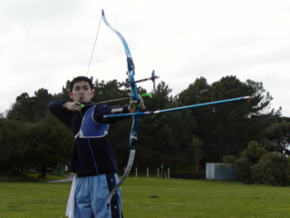
一射一射着実に
{kind=link}
今日は自分の他にリカーブ2人(オリンピックボウx1、ベアボウx1)、コンパウンド(フィンガーリリース)1人いた。
リカーブボウを射つアーチャーはアメリカにはあんまりいないっていう話だけどもゴールデンゲートパークではそうでもないみたい？
オリンピックボウの一人は木製ハンドルのテイクダウンボウを使いこなすナイスガイ。彼女と一緒に来ていて綺麗なフォームだった。
よくここに来てるそうだ。また一緒に練習できるかな？
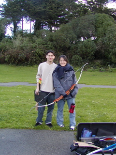
ピーターとユキさん
というわけで今年の「計」。
今年の目標は全日本選手権出場。
1250点を2回射てば良いので練習でできれば1260点くらいは射てるようになりたいところ。
90mから285,310,310,345点といったところか。
5月までに練習でSH640点、Single1200点、試合で630点、Single1180点
8月までに練習でSH650点、Single1250点、試合で640点、Single1230点・・・あれ、間に合わない。
もう少しハイペースで、
7月までに練習でSH650点、Single1250点、試合で640点、Single1230点
8月までに練習でSH660点、Single1260点、試合で655点、Single1250点・・・くらいうてればうれしい。
SHで600そこそこの今からするとかなり強気な目標だけれども学生の時射てないことはなかった点なのでイケるでしょう？ いや、やる。
心技体の「技」の面は週２回も練習すればなんとかなると思う。
残りの「心」、「体」の部分はおろそかになりがち。十分にトレーニングを積もう。
メンタル面は普段の練習日誌をしっかりつけること、また練習時、練習以外の時のイメージトレーニングを欠かさないように。
体力面は筋トレ＆ラン&スイミングで。トレーニングは週２回以上目標。
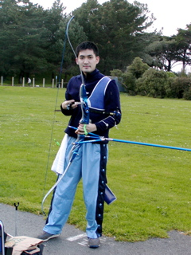
ぴ、ピーター・・何撮ってんの？
{kind=link}
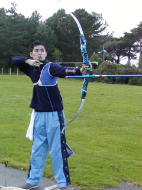
ちと右肩が高い、引き手に力が入ってる
{kind=link}
投稿者 yusuke : 14:23 | コメント (6) | トラックバック
2004年12月30日
そうだ、アーチェリーをしよう！
今日は久しぶりに晴れたのでようやくアーチェリーをしに。
ゴールデンゲートパークにあるアーチェリー場へはバスで45分くらい、マンションからは実質１時間弱くらいで着く。
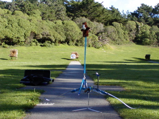
今日うったのは50m
{kind=link}
混雑していないか心配していたけども今日はがらがら。コンパウンドのアーチャーが一人いただけだった。なぜかフィンガーリリース。
ちゃんと距離が表示されている的は２つしかないので一つを陣取って使う。以前フロリダにあったアーチェリー場ではヤードしか表示がなかったので心配していたけどもここはヤードとメートル両方表示があった。
うってみるとパスっと軽い音がする。心配して的まで行ってみると案の定抜けている。的はわらを束ねてできているんだけど真ん中あたりはだいぶ柔らかくなっていた。やっぱり的には畳が一番でしょう。
とりあえず的紙を端の方に寄せて回避。
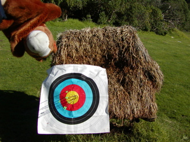
２週間ぶりくらいの練習になったけどまぁまぁ？
{kind=link}
しかし、今度はわらを束ねている外枠の木を射ってしまった！３インチくらいもぐりこんでいてとても抜けない・・・。すげー萎えて今日は練習終わり。